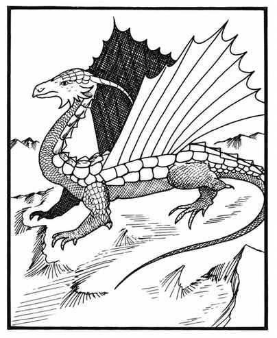

赤铜龙 · Copper Dragon（Draco Comes Stabuli）
 |
|
赤铜龙偏爱温暖干燥的岩石地带，通常在此寻找洞穴或岩窟筑巢。它们往往比较自私，因此在涉及自身利益时，多半持中立立场。
赤铜龙通常以爪、爪、咬攻击，也可以使用两种吐息之一：与黑龙相同的酸液吐息（长 7 寸、宽 ½ 寸），或长 3 寸、宽 2 寸、厚 2 寸的气云。气云会使其中生物行动减半，持续 6 个近战轮；通过对抗龙息的豁免检定即可避免迟缓。能够施法的赤铜龙，在前三个年龄阶段各获得一个一环法术；接下来的三个阶段各另获一个二环法术；最后两个阶段各另获一个三环法术。因此，会施法的古赤铜龙有三个一环、三个二环和两个三环法术。
上一节：色彩龙 · Chromatic Dragon
下一节：金龙 · Gold Dragon（Draco Orientalus Sino Dux）